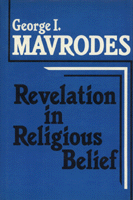

<body bgcolor="#FFFFFF" text="#000000" link="#0000FF" vlink="#CC0000" alink="#CC0000"><center><hr width="350" size="1" align="center" noshade>A philosophical exploration of three models of the concept of divine revelation<hr width="350" size="1" align="center" noshade><p><a href="https://cdcshoppingcart.uchicago.edu/Cart/ChicagoBook.aspx?ISBN=9780877225454&&PRESS=temple" target="_top">Buy this book!</a> | <a href="https://cdcshoppingcart.uchicago.edu/Cart/Cart.aspx?PRESS=temple" target="_top">View Cart</a> | <a href="https://cdcshoppingcart.uchicago.edu/Cart/Cart.aspx?PRESS=temple" target="_top">Check Out</a></p><p></p></center><!--none//--><h1>Revelation in Religious Belief</h1>
<h3>George I. Mavrodes</h3>
<P>cloth 0-87722-545-1 $32.95, Mar 88, <FONT COLOR=#990033>Out of Print</FONT>
<BR> 168 pp
</P><BLOCKQUOTE><I>"Mavrodes identifies some novel possibilities for divine revelatory action and explores them with the aid of ingenious and original analogies. The treatment of possible modes of revelation is lucid, thorough and insightful. It provides a fresh perspective on a topic heretofore neglected by contemporary philosophers of religion."</I>
<br>&#151<b>Philip L. Quinn</b>, University of Notre Dame<I></I></BLOCKQUOTE>
<p>In this philosophical exploration of the concept of divine revelation, George I. Mavrodes examines the ways in which revelation might bear on the generation and justification of religious belief. Locating the topic of revelation within the broader field of the epistemology of religion, he discusses the possibilities of divine action in the world in terms of three categories: the Causation Model, the Manifestation Model, and the Communication Model.
<p>In the Causation Model, God produces an effect in the person experiencing the revelation. The Manifestation Model shows God represented through sensory phenomena. In the Communication Model the message of God is delivered in a manner analogous to human speech.
<p>Western theologians and philosophers in the Christian tradition have commonly divided theological thinking into rational or natural theology and revealed theology. Addressing the content of revealed theology, Mavrodes acknowledges that these categories fail to be mutually exclusive, and admits that some of what he describes as revelation does not fit easily into that definition.
<p>Probably the most important special epistemological concept in Christianity, revelation is also central to other strongly theistic religions, such as Judaism and Islam. Because this concept has been largely ignored by contemporary analytic philosophers, Mavrodes’ attempt to begin a substantial investigation and discussion is particularly important.
<BR>&nbsp;<H2>About the Author(s)</H2>
<P><b>George I. Mavrodes</b> is Professor of Philosophy at the University of Michigan and author of <I>Belief in God: A Study in the Epistemology of Religion</I>.</P>
<BR><H2>Subject Categories</H2>
<p><A HREF="/tempress/religion.html" TARGET="_top">Religion</a>
</p>
<p align="center"><a href="https://cdcshoppingcart.uchicago.edu/Cart/ChicagoBook.aspx?ISBN=9780877225454&&PRESS=temple" target="_top">Buy this book!</a> | <a href="https://cdcshoppingcart.uchicago.edu/Cart/Cart.aspx?PRESS=temple" target="_top">View Cart</a> | <a href="https://cdcshoppingcart.uchicago.edu/Cart/Cart.aspx?PRESS=temple" target="_top">Check Out</a></p><p><font face="Arial" size="1"><a href="copyright.html" onMouseOver="window.status='Web Copyright Policy';return true;" onMouseOut="window.status=''" title="Web Copyright Policy">&copy;</a> 2015 <a href="http://www.temple.edu" target="new" onMouseOver="window.status='Link to Temple University home page';return true;" onMouseOut="window.status=''" title="Link to Temple University home page">Temple University</a>. All Rights Reserved. http://www.temple.edu/tempress/titles/562_reg.html</font></p>